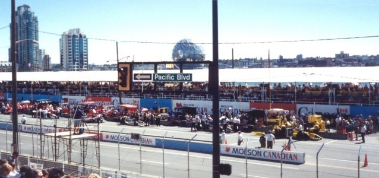
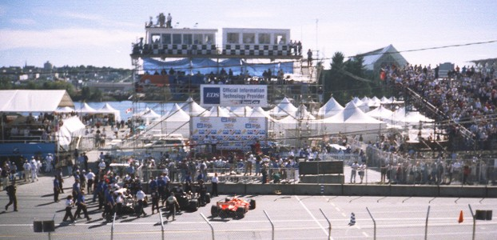
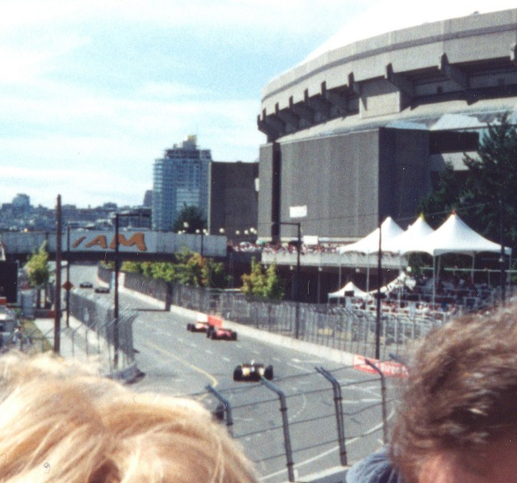

Pacific Place, Vancouver, British Columbia, Canada
Photographs taken: 31st August-1st September, 1996
These two photographs were taken from the grandstand opposite the pits during the CART Champcar race of 1996. This race was held on the original circuit variant, with the course later moving further eastwards from 1998 onwards.
|  |  | |
| Pits and Start Straight | Paddock and Podium |

Corner after pit
| Photographs ©Fred Young. Reproduced here with kind permission. | Photographs have been digitally
altered to remove tobacco advertising. |